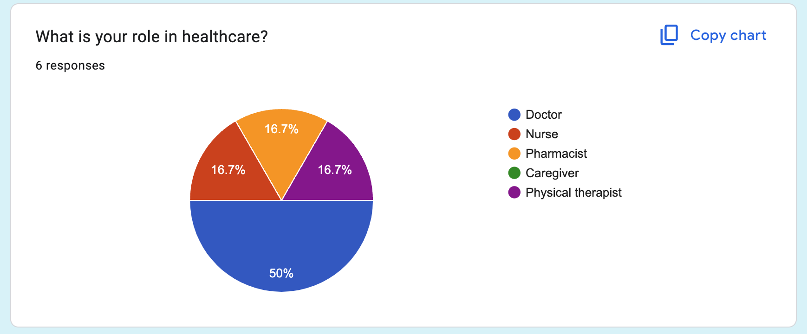
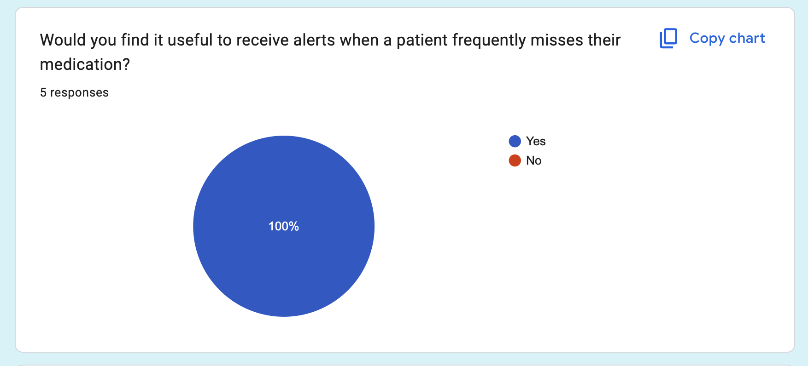
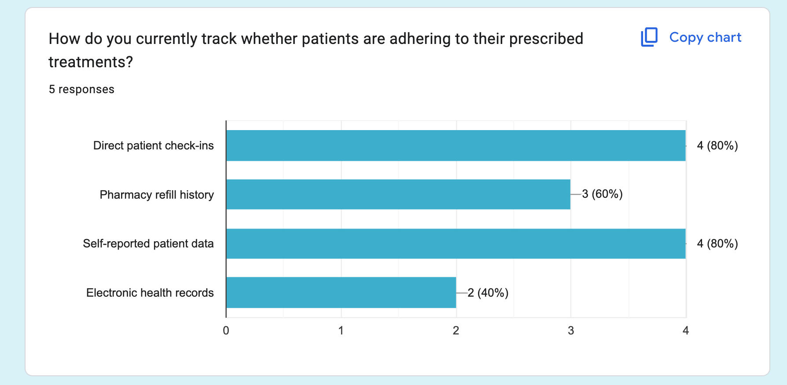
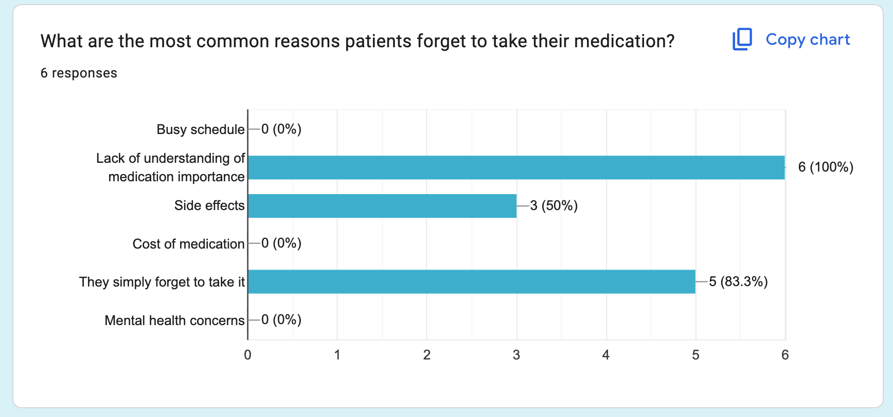
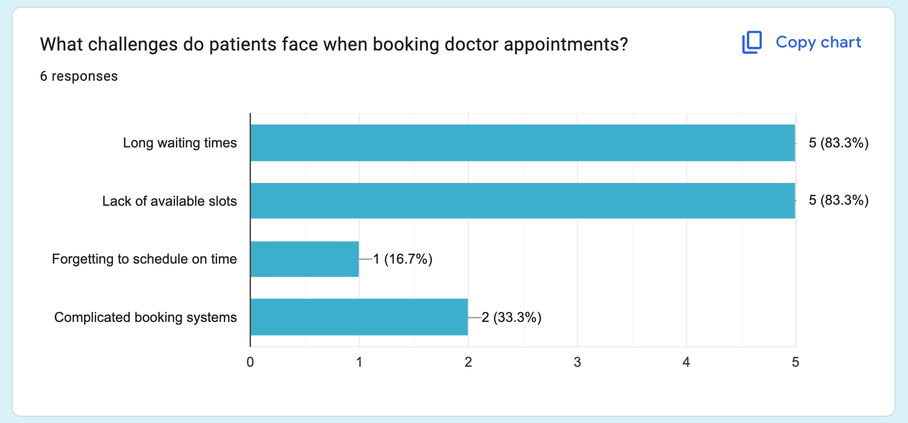
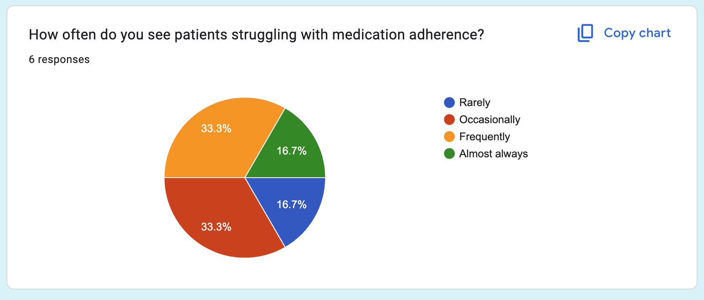
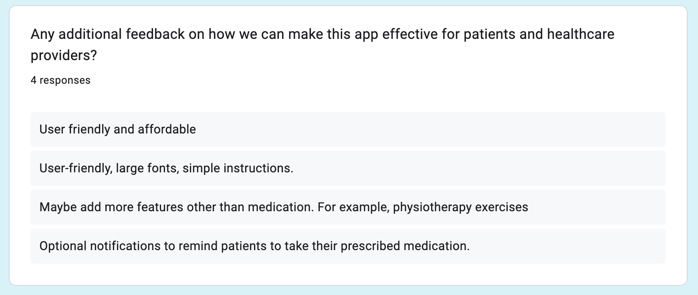
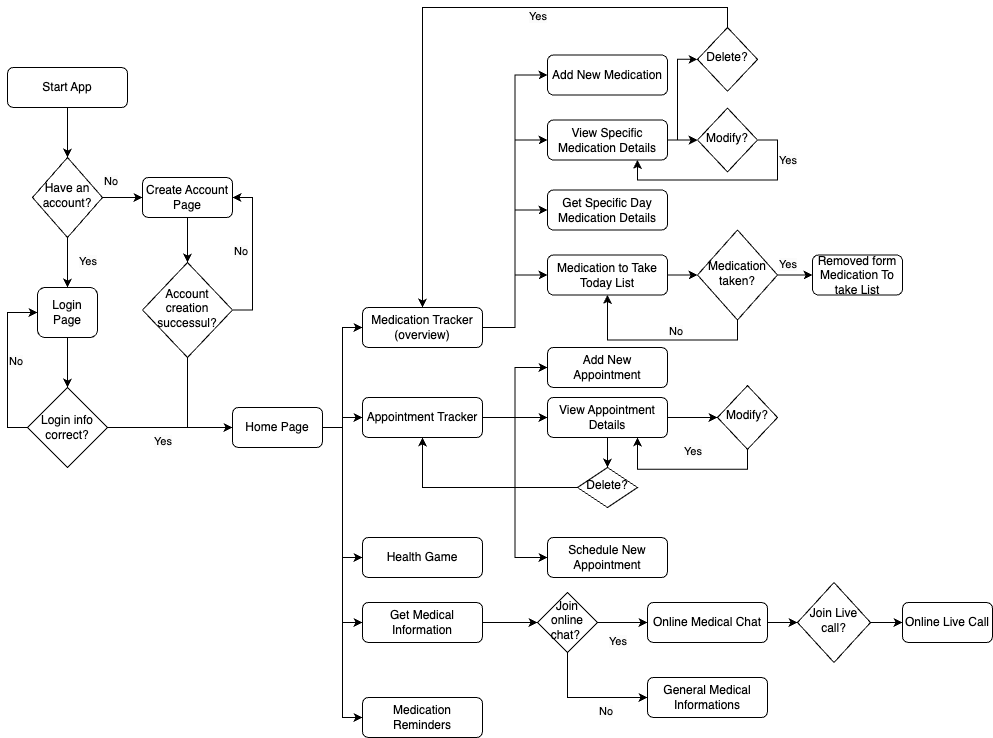

User Personas
We created personas to represent different user types:


The Health Companion Super App is designed to help individuals manage their medications and doctor appointments efficiently. This case study explores the UX/UI design process behind its development.
Many individuals with chronic illnesses struggle with medication adherence and appointment management. Research shows that:
To better understand user needs, I conducted a survey specifically for healthcare professionals. My brother, a doctor, shared the survey with colleagues from different hospitals and workplaces.
I gathered **6 responses** from different healthcare roles:
Healthcare workers expressed concerns about **patient confidentiality, data security, and accessibility for older patients.** Some also suggested adding **features beyond medication tracking, such as physiotherapy reminders.**
Here are some of the key charts from the survey:
      We created personas to represent different user types:

Thomas’s journey from ignoring medication to engaging with gamification features.

A visual representation of how users navigate the app.
Our design process started with low-fidelity wireframes and evolved into a fully interactive prototype.


Before digital wireframing, we created hand-drawn sketches to outline the app’s core functionality.


To create a clean, modern, and accessible interface, I selected a soothing color palette that enhances readability and usability.
#16423C
Dark Green (Primary)
#6A9C89
Muted Green (Secondary)
#C4DAD2
Soft Mint (Accent)
#E9EFEC
Light Grayish Green (Background)
The selected typography balances **modern readability and accessibility.** I used:
We conducted usability tests with target users and found:

For feedback or questions, email us at contact@healthcompanion.com